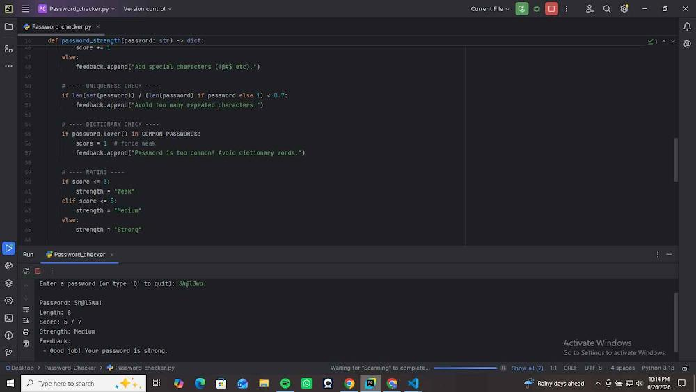
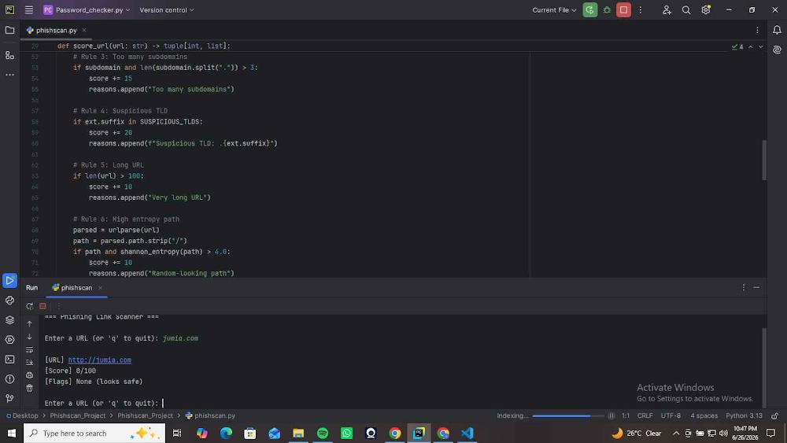
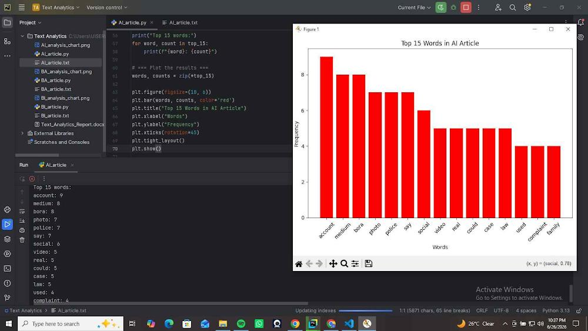

My Projects

Password Strength Checker
A Python application that evaluates the strength of user passwords by analyzing their length, complexity, and character combinations. It provides feedback and recommendations for creating stronger passwords.
View Project
PhishScan Tool
A cybersecurity tool that scans URLs for suspicious or malicious characteristics to help users identify potential phishing websites before visiting them.
View Project
Text Analytics
A Python-based application that analyzes published text to extract useful insights, identify patterns, and generate meaningful statistics.
View Project